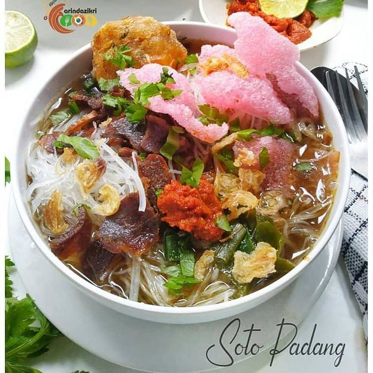

Soto Padang

Seperti banyak kuliner lain di Indonesia, soto merupakan hasil akulturasi budaya antara masyarakat Indonesia dengan masyarakat pendatang. Soto muncul sebagai hasil interaksi masyarakat Indonesia dengan bangsa Tiongkok yang datang ke Indonesia. Menurut Dennys Lombard dalam buku “Nusa Jawa: Silang Budaya”, soto merupakan transformasi dari hidangan Tiongkok yang disebut Caudo. Itu pula sebabnya soto memiliki beberapa nama panggilan yang berbeda di beberapa daerah, seperti Coto di Makassar, Tauto di Pekalongan, dll. Tapi di sebagian besar daerah di Indonesia, nama ‘Caudo’ berubah jadi ‘Soto’.
Belum lengkap rasanya menikmati masakan Minang kalau belum mencoba yang
namanya Soto Padang. Meskipun banyak masakannya dilabeli dengan kata
“Padang”, seperti halnya pada satai ataupun rendang, bukan berarti
semuanya memiliki kesamaan rasa. Bagi yang menggemari masakan Padang
namun belum mengenal yang satu ini, maka pastinya akan terkejut dengan
keunikan rasa serta presentasinya.
-
- 500 gram daging sapi (campur dengan tulang supaya kaldunya lebih kerasa).
- 2 liter air.
- minyak goreng untuk menumis.
-
- 2 batang sereh digeprek.
- 3 lembar daun salam.
- 4 lembar daun jeruk.
- 5 buah kapulaga.
- 8 kelopak bunga lawang.
- 5 buah cengkeh.
- 4 cm kayu manis.
- 2 batang daun bawang diiris.
-
- 10 siung bawang putih.
- 6 buah bawang merah.
- 3 ruas lengkuas.
- 2 ruas jahe.
- 1 ruas kunyi.
- 1 sdt pala bubuk.
- 1 sdm ketumbar bubuk.
- 2 sdt lada bubuk.
- garam.
-
- sohun siram dengan air panas, rendam sebentar, angkat dan tiriskan.
- perkedel kentang.
- kerupuk merah.
- sambal.
- seledri diiris halus.
- bawang goreng.
- kecap.
- cuka.
-
- Rebus daging sampai mendidih keluar buihnya, buah buih yang mengapung, masukkan semua bahan cemplung, lanjutkan merebus sampai daging empuk, masukan daun bawang, tunggu layu, matikan kompor, angkat daging, dan tunggu dingin.
- Panaskan minyak goreng, tumis bumbu halus sampai wangi, campur bumbu yang sudah ditumis ke dalam air rebusan daging, masak sebentar sampai bumbu dan kaldu menyatu. koreksi rasa.
- Iris tipis daging yang sudah direbus, kemudian goreng sampai garing.
- Tata sohun, daging didalam mangkok, siram dengan kuah soto, beri kerupuk, perkedel, seledri dan sambal.
- Sajikan.